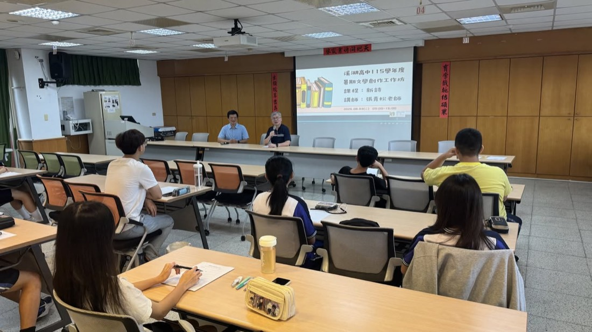
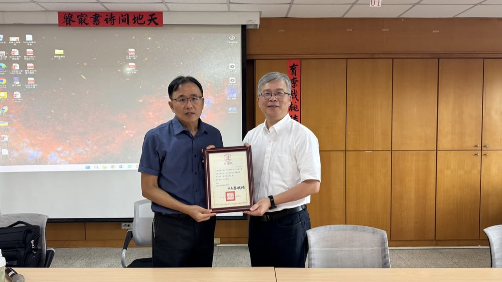
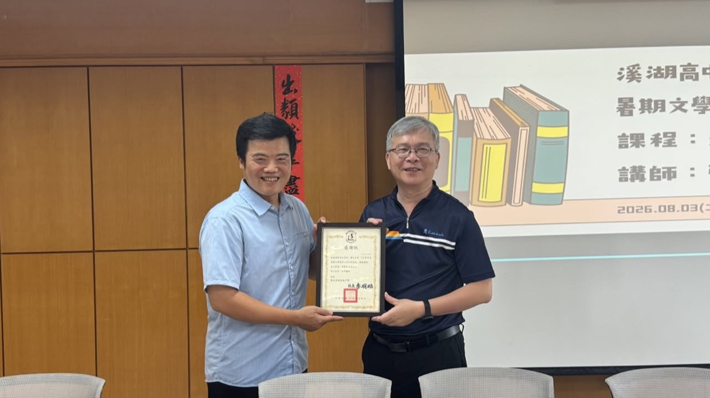
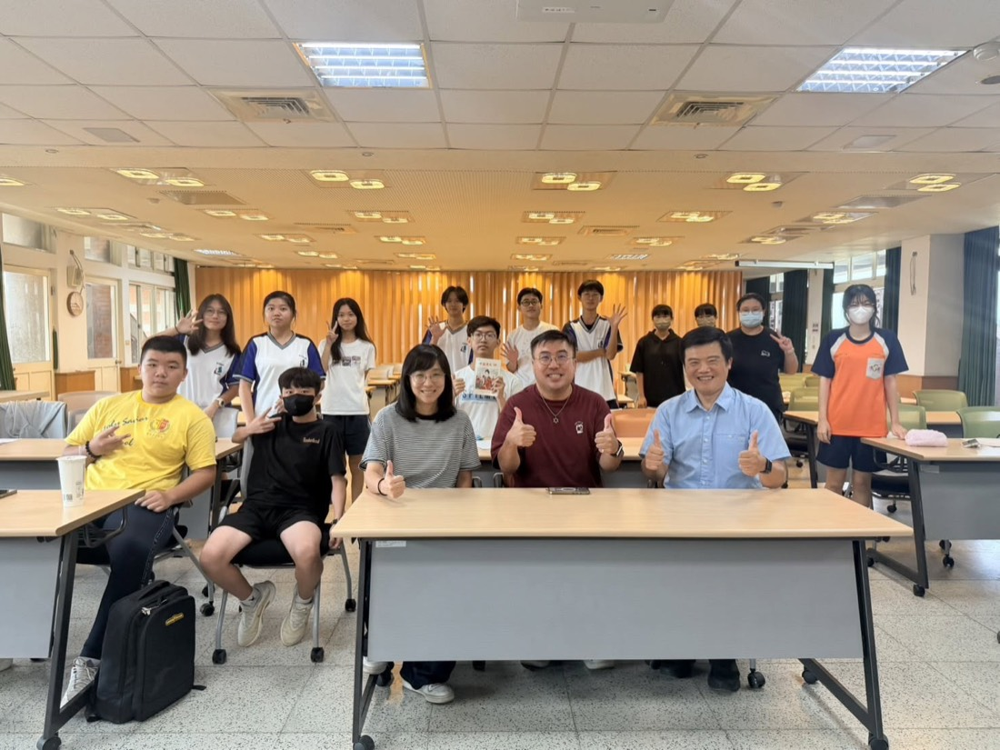
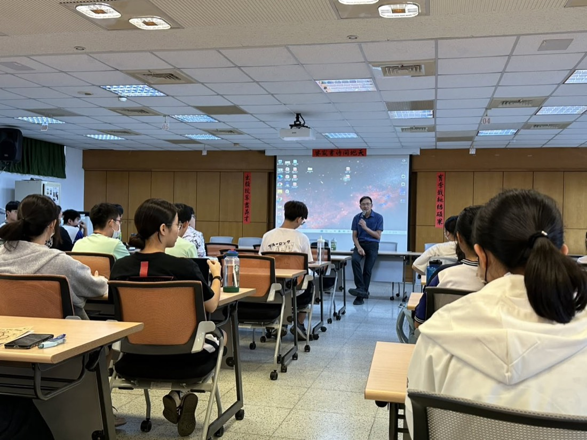
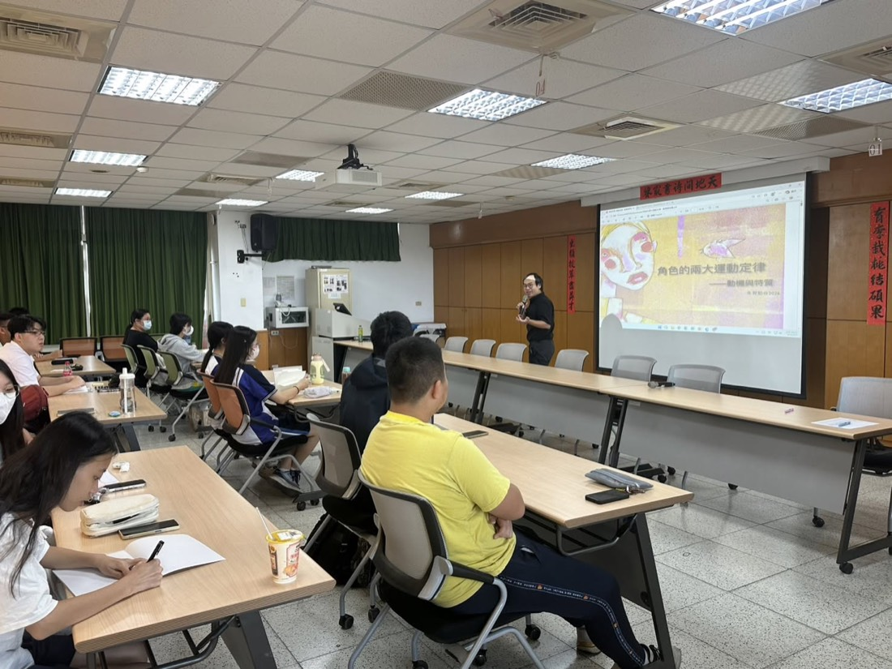

From August 4 to 6, the Office of Student Affairs ran a three-day summer creative-writing workshop to build a writing culture on campus. Three award-winning, widely published writers led the sessions: Chang Ching-sung on modern poetry, Chu Yu-hsun on fiction, and Director Tsai Chi-hua on the essay. Principal Li Ming-chao encouraged students to keep writing outside class: it sharpens reading comprehension and logical thinking — essential for humanities students, and a real help to science students' grasp of their own subjects.
學務處於 8 月 4 日至 6 日連續辦理 3 天暑假文學創作工作坊，推廣本校文學創作風氣、提升學生文藝素養。講座均為大師級人物：新詩組張青松老師、小說組朱宥勳老師、散文組蔡淇華主任。李明昭校長鼓勵同學課餘多創作，從中增進閱讀理解與邏輯思考——不僅是社會組必備的能力，自然組同學具備後亦有助於理科的理解。